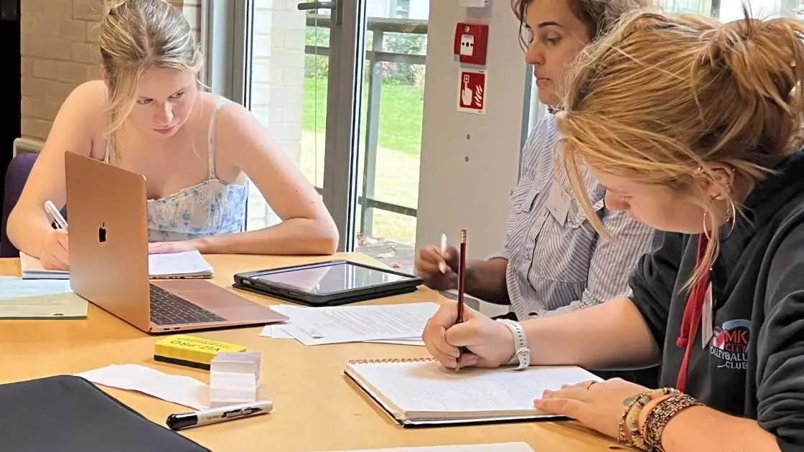

STEP questions are designed to require sustained problem solving. A candidate may explore several ideas, discover a useful substitution halfway through or complete only part of a question. The written solution should preserve the useful mathematics without becoming a transcript of every unsuccessful thought.

1. Give the solution a visible structure
Begin by defining quantities and stating what is being assumed. If the question naturally divides into cases, label them. If a previous part is being used, say so. Structure helps the reader understand why each calculation is present.
A useful solution often has this shape:
- identify the representation or idea being used;
- carry out the necessary algebra, geometry or calculus;
- justify the step where the conclusion actually follows; and
- state the conclusion in the language of the question.
This does not mean writing an essay. Short mathematical sentences between equations are usually enough.
2. Justify the steps that carry mathematical meaning
Routine rearrangement does not need commentary on every line. The important points are the choices that may not be automatic: why a quantity is positive, why a root is rejected, why two cases cover every possibility or why an extremum is the required one.
3. Keep notation stable and readable
Define new symbols before using them, avoid changing notation halfway through and place one meaningful step on each line. Equal signs should join expressions that are genuinely equal; implication arrows should indicate implication rather than serve as decoration.
- Use brackets generously when several operations are nested.
- Distinguish an equation from an identity.
- Keep diagrams large enough to annotate.
- Do not squeeze late work into gaps where the logical order becomes unclear.
4. Make partial progress useful
A complete solution is ideal, but an incomplete one can still contain substantial correct mathematics. If you become stuck, record the strongest valid result reached and explain what remains to be shown. Do not replace reasoning with a guess at the final expression.
Useful partial work might include:
- a correct reformulation of the problem;
- a relevant identity or recurrence derived correctly;
- one complete case of a case-based argument;
- a graph or diagram with correctly identified key features; or
- a special case that reveals a plausible general pattern.
Clearly separate established results from conjectures. Writing “this suggests” is more mathematically honest than presenting an observed pattern as a proof.
5. Check the argument, not only the arithmetic
Substituting a numerical value can catch an algebraic error, but strong checking goes further. Re-read the exact claim. Did the solution prove both directions when required? Were endpoints included? Was division by a possibly zero quantity justified? Does the stated range match the substitutions used?
A final check should include:
- signs, factors and constants;
- domains, ranges and excluded values;
- all requested cases or parts;
- whether the conclusion answers the actual question; and
- whether any “obvious” assertion carries a hidden assumption.
How to practise solution writing
Choose one attempted question each week and rewrite it as though it were being submitted. Compare it with the available mark scheme or worked solution only after the rewrite. The goal is not to imitate the official solution line for line, but to identify missing reasoning and more efficient structure.
The University of Cambridge's free STEP Support Programme provides modules with hints and full solutions. The STEP question database can be searched by paper, year and topic, making it useful for deliberately varied practice.
This guide discusses general mathematical communication using public information. It does not reproduce confidential marking material or guarantee how any particular response will be assessed.